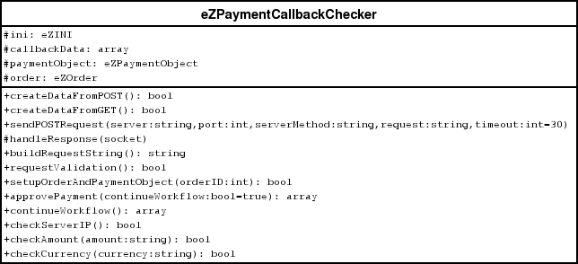

eZPaymentCallbackChecker class

This is a helper class for processing callbacks for gateways which supports redirection to a
payment site.
Data
ini - an instance of eZINI class. Contains settings for gateway.
callbackData - an array of key-value pairs which were retrieved form payment site.
paymentObject - an instance of eZPaymentObject subclass.
order - an of eZOrder class.
Methods
createDataFromPOST(): bool
Creates callbackData from POST callback.
Parameters
Returns
createDataFromPOST(): bool
Creates callbackData from GET callback.
Parameters
Returns
sendPostRequest(server: string, port: int, serverMethod:string, request: string, timeout:int=30)
Opens socket and sends POST request to server:port/serverMethod. For retrieving response
handleResponse will be called.
Parameters
Returns
handleResponse(socket)
Does nothing. Must be overridden in subclass.
Parameters
Returns
buildRequestString(): string
Does nothing. Must be overridden in subclass. Usually prepares string for postback to the payment site
to make sure that callback was called from payment site(against hacking).
Parameters
Returns
requestValidation(): string
Does nothing. Must be overridden in subclass. Usually certifies that callback was called from payment site
(against hacking).
Parameters
Returns
setupOrderAndPaymentObjcet(orderID: int)
Initializes paymentObject and order by given orderID.
Parameters
Returns
approvePayment(continueWorkflow:bool = true)
Approves payment and continues workflow.
Parameters
Returns
continueWorkflow()
Continues workflow.
Parameters
Returns
checkServerIP(): bool
Reads valid ip-addresses from ini file and searches among them callback's ip(against hacking).
Parameters
Returns
TRUE if server ip is valid.
checkAmount(): bool
Compares amount values from callback and order.
Parameters
Returns
TRUE if amounts are equal.
checkCurrency(): bool
Compares currency values from callback and order.
Parameters
Returns
TRUE if currencies are equal.